정보통신기사(구) (2005-03-20 기출문제)
1과목: 디지털 전자회로
1. 그림과 같이 T형 플립플롭을 접속하고 첫번째 플립플롭에 1,000[㎐]의 구형파를 가해주면 최종 플립플롭에서의 출력주파수는?
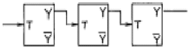
- 1000[㎐]
- 500[㎐]
- 250[㎐]
- 125[㎐]
(정답률: 알수없음)

2. 에미터 접지(CE) 증폭기의 특징 중 거리가 가장 먼 것은?
- 전압이득이 1이상이다.
- 주로 버퍼(Buffer)로서 사용한다.
- 전류이득이 1이상이다.
- Ri , Ro 는 RS , RL 에 따라 그다지 변동하지 않는다.
(정답률: 알수없음)
3. 그림의 연산증폭기 회로에서 Vo의 출력식은?
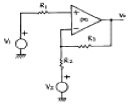
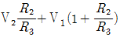
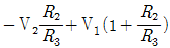
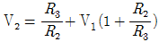
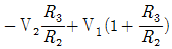
(정답률: 알수없음)
4. 그림의 회로에서 연산증폭기의 증폭도 A가 충분히 클 때 입력단자에 0.2[V]의 전압을 입력시켰다면 출력전압은?
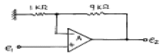
- 2[V]
- -2[V]
- 0.02[V]
- -0.02[V]
(정답률: 알수없음)
5. 디지털 시스템에 필요한 클럭의 요구 조건 중 거리가 먼 것은?
- High 및 Low 레벨 전압이 안정할 것
- 상승 및 지연 시간이 장시간일 것
- 주파수가 안정할 것
- 수정발진기는 클럭의 요구 조건을 만족할 것
(정답률: 알수없음)
6. 다음 회로는 어떤 플립플롭을 만들기 위해 설계한 것인가?
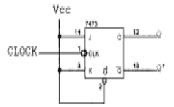
- SR 플립플롭
- JK 플립플롭
- T형 플립플롭
- D형 플립플롭
(정답률: 알수없음)
7. 연산증폭기를 사용한 아날로그 계산기에서 미분기 대신 적분기를 사용하는 가장 큰 이유는?
- 적분기의 회로가 간단하다.
- 적분기는 비선형이다.
- 적분기의 계산속도가 빠르다.
- 적분기는 잡음특성이 좋다.
(정답률: 알수없음)
8. 그림에서 Vi = Vm sin α일 때 부하 저항 RL 양단에 나타나는 직류출력 전압은? (단,
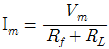
는 다이오드의 순방향 저항이다.)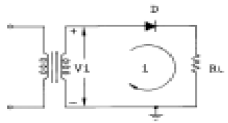
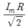
- Im RL
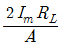
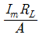
(정답률: 알수없음)
9. 다음 회로에서 A,B,C의 세 입력이 다같이 (+)Vcc 레벨일 경우 OFF상태가 되는 트랜지스터는?
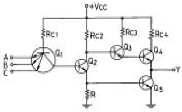
- Q2,Q3
- Q3,Q4
- Q2,Q4
- Q2,Q5
(정답률: 알수없음)
10. I = Ic(1 + m sin wmt)sin wct인 피변조파의 전류가 임피던스 값이 R인 회로에 흐를 때 상측대파의 평균전력은? (단, 변조도는 m 이다.)
- m2Ic2R/8
- m2Ic2R/6
- m2Ic2R/4
- m2Ic2R/2
(정답률: 알수없음)
11. 불 대수식
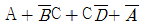
를 간단히 하면?- 1
- A
- B
- C
(정답률: 알수없음)
12. 그림의 논리회로를 간소화 하였을 때 출력 X는?
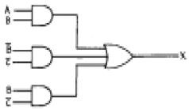
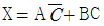
- X = A+B
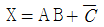
- X = AB
(정답률: 알수없음)
13. 수정진동자의 병렬공진주파수에서의 리액턴스는?
- 무한대
- 0
- 순용량성 리액턴스
- 순저항성 리액턴스
(정답률: 알수없음)
14. 그림과 같은 기본 발진회로에서 증폭기 A의 전압이득이 50일 때, 귀환회로 β의 귀환율은 얼마인가?
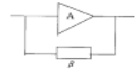
- 0.01
- 0.02
- 0.⑤
- 0.1
(정답률: 알수없음)
15. 여러 신호를 단일 회선을 이용하여 공동으로 전송하는데 필요한 장치는?
- 엔코더(encoder)
- 디코더(decoder)
- 디멀티플렉서(demultiplexer)
- 멀티플렉서(multiplexer)
(정답률: 알수없음)
16. 그림과 같은 트랜지스터 회로에서 Q1의 주된 역할은? (단, Q1과 Q2의 특성은 동일하다고 한다.)
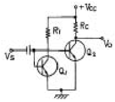
- 입력 신호를 증폭한다.
- Q2와 함께 한 개의 PNP 트랜지스터 역할을 한다.
- 출력 전압 Vo를 일정히 유지하는 역할을 한다.
- 온도 변화에 따른 바이어스 안정에 기여한다.
(정답률: 0%)
17. 다음 Karnaugh도를 간략화한 논리식은?
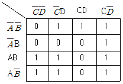
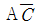
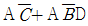
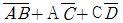
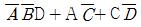
(정답률: 알수없음)
18. 이득 40[㏈]의 저주파 증폭기가 6[%]의 의율을 가지고 있을 때 이것을 1[%]로 개선하기 위해서는 약 얼마의 전압부궤환율(β)을 걸어주어야 하는가? (단, log105 = 0.699, log106 = 0.778, log107 = 0.845)
- 13[㏈]
- 19[㏈]
- 26[㏈]
- 33[㏈]
(정답률: 알수없음)
19. 다음 회로에 대한 설명 중 틀린 것은?
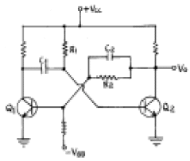
- 이회로는 단안정 멀티바이브레이터이다.
- 안정상태는 Q1 = ON, Q2 = OFF 상태이다.
- 출력펄스폭의 계산은 T=0.69 R1C1 이다.
- C2는 Q1의 상태변화를 가속화시켜주는 가속용 콘덴서이다.
(정답률: 알수없음)
20. 다음 그림의 회로는?
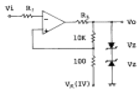
- 크램프 회로
- 차동증폭 회로
- 슬라이서 회로
- 쉬미트 트리거 회로
(정답률: 알수없음)
2과목: 정보통신 시스템
21. 광통신방식에서 광신호를 전기적 세력으로 변환해 주는 소자는?
- LD 및 LED
- LD 및 APD
- LED 및 APD
- APD 및 PD
(정답률: 알수없음)
22. ITU-T X시리즈 권고안 중 X.25에서 다루지 않는 계층은?
- 물리계층
- 세션계층
- 데이터링크계층
- 네트워크계층
(정답률: 알수없음)
23. 정보통신망이 제공해야 할 사항이 아닌 것은?
- 높은 신뢰성
- 기밀의 보안성
- 유지관리의 용이성
- 부하의 집중화
(정답률: 알수없음)
24. 다음 중 전용회선과 같이 상대적으로 장시간 동안의 패킷전송이 필요한 트래픽에 적합한 교환방식은?
- 회선교환
- 데이터교환
- 데이터그램 패킷교환
- 가상회선 패킷교환
(정답률: 알수없음)
25. 데이터그램 패킷교환(datagram packet switching)의 특징이 아닌 것은?
- 패킷전송
- 각 패킷마다 경로가 설정됨
- 각 패킷마다 오버헤드 비트가 있음
- 전용 전송로를 가짐
(정답률: 70%)
26. ISDN에 의해 제공되는 서비스의 종류가 아닌 것은?
- 베어러 서비스(bearer service)
- 텔레 서비스(tele-service)
- 부가 서비스(supplementary service)
- 비음성 서비스(non voice service)
(정답률: 알수없음)
27. HDLC(High Level Data Link Control)에서 프레임 형식의 구성방법으로 옳은 것은? (단, A: Address Field, C: Control Field, F: Flag Sequence, I: Information Field, FCS: Frame Check Sequence)
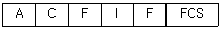
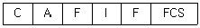
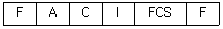
(정답률: 알수없음)
28. 동화상, 고속데이터, HDTV 등 광대역 서비스를 처리할 수 있는 광대역 ISDN 교환기에 사용하는 교환방식은?
- ATM
- TDM
- ALOHA
- STM
(정답률: 알수없음)
29. 다음 DATA 전송제어문자의 내용이 적합하지 않은 것은?
- SOH : 정보 메시지 헤딩의 시작 표시
- STX : 본문의 시작 표시
- ETX : 본문의 종료 표시
- ETO : 전송의 종료 표시
(정답률: 알수없음)
30. 어느 특정시점에서 시스템이 소정의 기능을 완수하고 있는 확률을 가용도(A)라고 한다. 어떤 시스템의 평균고장 간격은 MTBF, 평균수리시간을 MTTR이라고 했을 때 가용도(A)를 구하는 식은?
- A=MTBF/MTBF-MTTR
- A=MTBF/MTTR-MTBF
- A=MTTR/MTBF+MTTR
- A=MTBF/MTTR+MTBF
(정답률: 알수없음)
31. 근거리통신망(LAN)을 동축선을 이용하여 Ethernet 으로 구축하였다. 양 끝단 LAN 케이블을 종단시키지 않았을 때 예견되는 문제 중 가장 심각한 것은?
- 유해 전파를 방출할 수 있다.
- 공중의 유해 전자파를 흡수하여 LAN 케이블 상에 잡음 영향이 심해진다.
- 반사파가 발생하여 데이터의 오류를 발생시킨다.
- 데이터 전송속도가 떨어진다.
(정답률: 알수없음)
32. 장거리 전송에서 4선식의 장점이 아닌 것은?
- 누화(crosstalk)의 감소
- 반향(echo)의 감소
- 잔류손실의 감소
- 전송대역폭의 감소
(정답률: 알수없음)
33. 종합정보통신망(ISDN)에서 사용자와 망간의 인터페이스 중기본 인터페이스 채널구조는?
- 2B+D
- 23B+D
- 30B+D
- 3Ho+D
(정답률: 알수없음)
34. LAN의 매체 접근 제어(medium access control) 프로토콜 가운데 패킷 충돌이 발생하지 않는 것은?
- Aloha
- slotted Aloha
- CSMA/CD
- token ring
(정답률: 알수없음)
35. 인터넷 프로토콜인 IPv6에서 IP 주소는 몇개의 비트로 구성되는가?
- 32
- 64
- 128
- 256
(정답률: 알수없음)
36. 다음에 열거한 네트워크 토폴로지 중 CATV 기술을 이용한 광대역 LAN에서 주로 사용되는 것은?
- star
- tree
- ring
- mesh
(정답률: 알수없음)
37. 개방형 시스템의 7계층에서 문장의 압축, 암호화, 상위계층의 표현차이 해소 등을 수행하는 계층은?
- 트랜스포트계층
- 세션계층
- 표현계층
- 응용계층
(정답률: 알수없음)
38. Modem의 수신 입력단에서 최저 S/N 비가 25[dB] 필요하도록 설계되어 있다고 한다. 전송로의 수신레벨이 -10[dB]이라고 할 때, 이 전송로의 허용되는 잡음 레벨은?
- -45dB
- -35dB
- -25dB
- -15dB
(정답률: 알수없음)
39. DSB의 전송 대역폭은 신호 대역폭의 몇배인가?
- 1배
- 2배
- 3배
- 4배
(정답률: 알수없음)
40. 계층 3에서 패킷 전송경로를 결정하는데 이용되는 장치는?
- 허브
- 라우터
- 브리지
- 리피터
(정답률: 알수없음)
3과목: 정보통신 기기
41. 음성과 화상을 결합 하는 형태의 멀티 미디어의 총칭을 AV(Audio Visual)라 하며 실시간 및 통신 형태로 보아 이에 대한 분류 중 적당 하지 않은 것은?
- 실시간 영역의 User대 User의 회화형 AV
- 실시간 영역의 User 대 Machine의 검색형 AV
- 비실시간 영역의 User대 User의 Messaging형 AV
- 실시간 영역의 Machine대 Machine의 검색형 AV
(정답률: 알수없음)
42. 다음 중 역 다중화기의 특징이 아닌 것은?
- 광대역 회선을 사용하지 않고 두개의 음성대역 회선을 이용한다.
- 집중화기라고도 한다.
- 시분할 다중화기의 역 동작을 수행한다.
- 한 채널의 고장시 나머지 한채널은 1/2의 속도로 계속 운영이 가능하다.
(정답률: 알수없음)
43. 위성통신이나 무선통신 등에서 여러 가입자가 동시에 할당된 주파수 대에서 통신이 가능하도록 하는 다원 접속 방식이 아닌 것은?
- 주파수 분할 접속
- 멀티 분할 접속
- 시 분할 접속
- 코드 분할 접속
(정답률: 알수없음)
44. 위성통신방식에 대한 설명으로 옳지 않은 것은?
- 다원 접속이 가능하고 통신가능 범위가 높다.
- 사용되는 주파수대는 주로 SHF대이다.
- 이동통신에 적합하고, 이용분야가 확대되고 있다.
- 지구국수신계에서 사용되는 저잡음 증폭기는 클라이스트론이 사용된다.
(정답률: 알수없음)
45. 포트 공동이용기 설명 중 올바른 것은?
- 호스트 컴퓨터와 모뎀사이에 설치되어 컴퓨터 포트의 수와 비용을 절감시킨다.
- 모뎀과 단말기 사이에 사용하며 포트의 증가 없이도 이용율을 높인다.
- 호스트 컴퓨터와 단말기 사이의 모뎀과 교체하여 비용을 절감시킨다.
- 모뎀이 고장시에 모든단말기가 운영 불능에 빠진다.
(정답률: 알수없음)
46. 다음 중 디지털 서비스 유니트(DSU)의 특징이 아닌 것은?
- 디지털 전송로에 사용한다.
- 신호 전송을 위해 스크램블링 과정을 거친다.
- 정확한 동기 유지를 위해 클럭 추출회로가 있다.
- 선로에 한쪽 극성의 전압이 실리는 것을 방지한다.
(정답률: 알수없음)
47. 다음중 CATV의 기본구성에 속하지 않는 것은 ?
- 헤드엔드
- 교환장치
- 가입자설비
- 중계전송망
(정답률: 알수없음)
48. 무선전화기의 도청을 방지하기 위하여 사용하는 것은?
- 증폭기
- LAN
- PLL
- 비화기
(정답률: 알수없음)
49. 한 지역 안에서 컴퓨터와 단말기가 주변장치, 소프트웨어 또는 데이터와 같은 자원을 공유할 수 있도록 하는 시스템은?
- ISDN
- B-ISDN
- VAN
- LAN
(정답률: 알수없음)
50. PCM 단국장치사이의 전송로 구간에서는 일정한 거리마다 중계기를 설치하여 3R 기능을 수행토록 한다. 3R 기능과 관계 없는 것은?
- Reshaping
- Retiming
- Regeneration
- Retransmission
(정답률: 알수없음)
51. 정보통신시스템의 단말정보 전송장치에서 부호화된 정보의 Timing을 유지하고 에러를 검출 및 정정하는 장치는?
- 모뎀
- 중앙처리장치
- 전송제어장치
- 채널통합장치
(정답률: 알수없음)
52. 팩시밀리의 압축 부호화 방식중 MR 부호화 방식의 모드에 해당 되지 않는 것은?
- 전달 모드
- 패스 모드
- 수평 모드
- 수직 모드
(정답률: 알수없음)
53. 그림에서 변복조기(MODEM)의 기본기능 중 전송신호를 알맞게 설명한 것은?
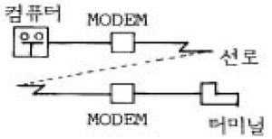
- 터미널과 변복조기사이에는 디지털신호를 송수신 한다.
- 변복조기와 변복조기사이에는 아날로그 또는 디지털 신호를 송수신한다.
- 변복조기와 컴퓨터사이는 디지털신호 또는 아날로그 신호를 송수신한다.
- 터미널과 컴퓨터사이는 디지털신호를 송수신 한다.
(정답률: 알수없음)
54. ISDN 장비가 아닌 것은?
- NT(회선접속장치)
- TA(Terminal Adaptor)
- ISDN 전화기
- CTA(Center Transfer Adapter)
(정답률: 알수없음)
55. CDMA의 원리에 대한 설명중 옳지 않은 것은?
- 여러 사용자가 시간과 주파수를 공유한다.
- 각 사용자에게 교차상관이 적은 의사잡음열(PN Code)을 할당한다.
- 지향성 안테나를 사용하여 섹터화하기 때문에 FDMA에서와 같이 주파수 충돌이 발생한다.
- 송신할 신호를 대역확산(Spead Spectrum)하여 전송하고 수신측에서는 역확산하여 신호를 복원한다.
(정답률: 알수없음)
56. 다음 그림은 마이크로파대 수신기의 구성원리이다. A, B에 적합한 것은?
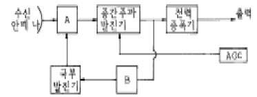
- A : 주파수변환기, B : AFC
- A : 주파수변환기, B : AVC
- A : 고주파증폭기, B : AVC
- A : 저주파증폭기, B : AFC
(정답률: 알수없음)
57. 푸시버튼 전화기에 대한 설명으로 옳지 않는 것은?
- 선택신호는 음성주파수 대역내의 신호를 사용한다.
- 데이터 전송용 및 원격제어용에도 사용할 수 있다.
- 2개의 LC동조회로로 구성된 주파수 발진회로가 있다.
- 저군 3주파수와 고군 3-4주파수를 조합하여 선택신호를 구성한다.
(정답률: 알수없음)
58. 다음 중 일반적인 다중화장비의 설명으로 가장 타당한 것은?
- 저속도측 부채널속도의 A,B,C,D의 합은 항상 고속링크측의 채널속도와 같다.
- 저속도측 부채널속도의 A,B,C,D의 합은 고속 링크측의 채널속도보다 크다.
- 단말측의 입력속도는 출력측 속도의 2-10배 까지도 가능하다.
- 선로를 동적인 공동이용방법으로 고속채널을 최대로 이용한다.
(정답률: 알수없음)
59. TV 전파 사이의 빈틈인 수직주사선 소거시간을 이용하여 통신하는 것은?
- Telex
- Teletext
- Videotex
- 고품위 TV
(정답률: 알수없음)
60. 모니터, 키보드, 전자식 메모패드 등을 이용하여 전화회선을 통하여 글씨나 그림을 음성과 동시에 송수신하는 쌍방향 통신 서비스는?
- 텔리텍스트
- 텔레라이팅
- 비디오텍스
- 화상응답서비스
(정답률: 알수없음)
4과목: 정보전송 공학
61. 수신국의 응답 없이 연속하여 전송 가능한 프레임의 수는 송수신 버퍼의 크기에 의해서 결정되며, 이러한 버퍼를 윈도(window)라하며 윈도를 사용하여 제어하는 방식은?
- 멀티링크제어
- 트래픽 제어
- 흐름제어
- 오류제어
(정답률: 알수없음)
62. 다음은 동기방식들에 관한 설명이다. 잘못된 것은?
- 비동기방식(ASYNCHRONOUS)는 주로 저속통신에 많이 이용된다.
- 플래그(FLAG)동기방식은 HDLC 전송제어에 이용되고 있다.
- 캐릭터(CHARACTER)동기방식에서는 스타트와 스톱비트로 문자를 구분한다.
- 망동기방식으로 독립동기와 종속동기,상호동기방식이 사용될수 있다.
(정답률: 알수없음)
63. 다음중 채널부호화(Channel Coding)의 목적을 바르게 기술한 것은?
- 전송채널에 적합하도록 캐리어를 섞어 준다.
- 오류제어를 위한 잉여부호를 삽입한다.
- 디지털 신호를 압축한다.
- 아나로그신호를 압축한다.
(정답률: 알수없음)
64. 다음 캐리어 변조(Modulation)방식중에서 대역폭 효율이 가장 높은 것은?
- 2진 ASK(Amplitude Shift Keying)
- BFSK(Binary Frequency Shift Keying)
- BPSK(Binary-Phase Shift Keying)
- QPSK(Quadrature Phase Shift Keying)
(정답률: 알수없음)
65. 다음중 진폭과 위상을 변화시켜 정보를 전달하는 디지탈 변조방식은?
- PSK
- QAM
- FSK
- ASK
(정답률: 알수없음)
66. PCM의 재생중계기에서 사용되는 LBO(Line Build - Out)의 역할을 바르게 나타낸 것은?
- 중계기의 원격감시
- 중계기의 장애검출
- 과전압으로부터 중계기의 입출력단 보호
- 다양한 길이의 전송매체에 대응해 좋은 중계특성 제공
(정답률: 알수없음)
67. 전체 n비트를 사용하는 코드에서 각 비트당 착오가 일어날 확률이 P라면 수신된 코드에서 착오가 발생하지 않을 확률은?
- n×p
- pn
- (1-p)n
- n× (1-p)
(정답률: 알수없음)
68. 베이스밴드 전송방식으로 신호를 그림과 같이 부호화하는 방식은 ?
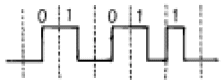
- RZ
- NRZ
- Differencial 코드
- Manchester 코드
(정답률: 알수없음)
69. 다음은 기준 데시벨 값들에 관한 설명이다. 틀린 것은?
- 0.001W를 기준으로 삼는 dB 스케일이 dBm 이다.
- dBm에서 m은 0dBm에 해당하는 값이 1mW임을 뜻한다.
- 1V를 기준으로 하는 경우의 단위는 dBV이다.
- 10dBW는 100W를 의미한다.
(정답률: 알수없음)
70. 헤테로다인 중계방식의 구성품이 아닌 것은?
- 주파수 변환기
- 중간주파 증폭기
- 전력 증폭기
- 복조기
(정답률: 알수없음)
71. T1 캐리어 전송시스템에서 각 비트당 점유시간은?
- 125㎲
- 10㎲
- 5.2㎲
- 0.65㎲
(정답률: 알수없음)
72. 다음은 동축케이블의 특징이다. 틀린 것은? (문제오류로 복원중입니다. 정확한 보기내용을 아시는 분께서는 오류신고를 통하여 내용 작성 부탁드립니다. 정답은 3번입니다.)
- 저항(R)은
 에 비례한다.
에 비례한다. - 전파의 속도 복원중 에서 비유전율 εS가 1인 경우 동축케이블 내의 전파속도는 광속과 같다.
- 누화 특성은 주파수가 낮을 수록 개선된다.
- PCM 전송 및 CATV 등에 사용되고 있다.
(정답률: 알수없음)
73. 여러 개의 타임슬롯(Time Slot)으로 하나의 프레임이 구성되며 각 타임슬롯에 대해 채널을 할당하여 다중화하는 것은?
- TDMA
- CDMA
- FDMA
- CSMA/CD
(정답률: 알수없음)
74. 트위스트 페어 케이블의 전송손실을 가져오는 요인을 가장 올바르게 설명한 것은?
- 표피효과는 와류에 의한 전송손실을 의미한다.
- 유전체 손실로 인해 누설 콘덕턴스가 증가한다.
- 근접작용은 전류가 도체 표면에 집중되는 현상이다.
- 와류 손실은 도체 내부의 각부의 전류가 서로 반발하는 것을 말한다.
(정답률: 알수없음)
75. 전송제어절차 순서에 맞는 것은?
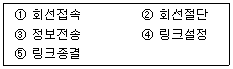
- ①→④→③→⑤→②
- ④→①→③→②→⑤
- ①→②→③→④→⑤
- ④→⑤→③→①→②
(정답률: 알수없음)
76. 다음 보기에서 1초당 최대 캐랙터수(Characters/sec)로서 맞는 것은? (단, 소수점 이하는 반올림한다.)
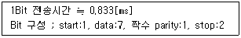
- 11
- 109
- 1200
- 95233
(정답률: 알수없음)
77. 아래 그림과 같은 광 도파 형태를 나타내는 광섬유는 어떤 종류에 속하는가?
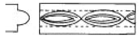
- 단일 모드 스텝 인덱스형
- 다중 모드 그레이디드 인덱스형
- 다중 모드 스텝 인덱스형
- 단일 모드 편파 보존형
(정답률: 알수없음)
78. 전송채널(channel)의 단위 시간당 전송할 수 있는 bit수는 샤논(shannon)의 식에 의하여 정립되는데, 이식과 가장 관련이 깊은 것은?
- 전송로의 정전용량(C)
- 전송로의 특성임피이던스(Zo)
- 신호대 잡음의 출력비(S/N)
- 전송신호의 위상(P)
(정답률: 알수없음)
79. 엘리어싱(aliasing)에 대한 설명으로 가장 타당한 것은?
- 실제시스템에서 취급하는 신호는 유한한 것이기 때문에 표본화 값이 무한한 시간에 걸쳐 발생하므로 생기는 오차
- 아날로그신호를 디지털화 하는 과정에서 발생하는 오차
- 나이퀴스트 표본화 조건을 만족하지 않게 표본화 하므로써 주파수 영역에서 스펙트럼이 겹쳐지게 되는 현상
- 연속적인 아날로그 신호를 PAM신호로 바꾸는 과정에서 발생하는 현상
(정답률: 알수없음)
80. 전송오류를 검출하는 방식으로 HDLC에서 주로 쓰는 블록검사 방법은?
- 군계수 검사
- 수평 패리티 검사
- 수직 패리티 검사
- 순환 중복 검사
(정답률: 알수없음)
5과목: 전자계산기일반 및 정보통신설비기준
81. 다음 중에서 캐시 메모리를 사용하는 이유로 가장 적당한 것은?
- 기억 용량이 증가한다.
- 기억 용량이 감소한다.
- 프로그램의 총 실행 시간을 단축시킬 수 있다.
- 평균 액세스 시간을 연장 하기 위해 사용한다.
(정답률: 알수없음)
82. (011111100000)2의 값을 갖는 레지스터의 내용을 오른쪽으로 네 번 시프트 시켰다면, 실제로 이 레지스터가 수행한 연산은 무엇인가?
- added -400
- multiplied by 4
- divided by 4
- divided by 16
(정답률: 알수없음)
83. 다음 중 deadlock의 발생 조건이 아닌 것은?
- 선취 조건
- 상호 배제 조건
- 환형 대기 조건
- 점유와 대기 조건
(정답률: 알수없음)
84. 2진수 ( 100011 )2의 2의 보수는 얼마인가?
- 100011
- 011100
- 011101
- 011110
(정답률: 알수없음)
85. 연산장치에서 뺄셈을 계산할 때 사용하는 방법은 ?
- 피감수에서 감수를 직접 뺀다.
- 보수(complement)를 사용하여 덧셈 계산한다.
- 쉬프트(shift)방법을 이용하여 감산한다.
- 비트마크(bit mark)방법을 사용하여 감산한다.
(정답률: 알수없음)
86. 컴퓨터의 논리회로를 발전 순서대로 나열한 것은?
- 집적회로 → 트랜지스터 → 진공관 → 고밀도 집적회로
- 진공관 → 집적회로 → 트랜지스터 → 고밀도 집적회로
- 트랜지스터 → 진공관 → 집적회로 → 고밀도 집적회로
- 진공관 → 트랜지스터 → 집적회로 → 고밀도 집적회로
(정답률: 알수없음)
87. 순서도(flowchart)의 기본 형태가 아닌 것은?
- 직선형 순서도
- 분기형 순서도
- 세분화형 순서도
- 반복형 순서도
(정답률: 알수없음)
88. 프로그램이 수행되는 도중에 인터럽트가 발생되면 현 사이클의 일을 끝내고 인터럽트 처리를 한다. 이 때 인터럽트를 끝내고 프로그램이 수행될 수 있도록 현상태를 보관하는 장소의 위치와 가장 관계가 깊은 것은?
- 상태 레지스터
- 프로그램 계수기
- 스택포인터
- 인덱스 레지스터
(정답률: 알수없음)
89. 다음에 실행할 명령어가 기억되는 주기억장치의 번지를 기억하고 있는 레지스터로 명령어가 수행될 때 마다 1∼4바이트의 일정한 값 만큼씩 증가되는 레지스터는?
- PC
- IR
- PSW
- MAR
(정답률: 알수없음)
90. 다음 중 10진수 0.834를 8진수로 변환한 결과와 가장 가까운 것은?
- (0.653)8
- (0.764)8
- (0.631)8
- (0.521)8
(정답률: 알수없음)
91. 정보통신공사업자가 아니어도 시공할 수 있는 공사는?
- 간이무선국의 설치공사
- 구내통신선로설비공사
- 해저케이블 시설공사
- 교환기 설치공사
(정답률: 알수없음)
92. 전기통신설비의 통합운영에 관한 설명에 적합하지 않은 것은?
- 전기통신설비의 효율적인 관리. 운영을 위하여 필요한 경우에 한한다.
- 통합운영은 모든 통신사업자가 할 수 있다.
- 최종적으로 대통령의 승인을 얻어야 한다.
- 미리 해당 설비의 설치자와 협의하여야 한다.
(정답률: 알수없음)
93. 다음 중 정보통신공사업의 등록 결격사유가 아닌 것은?
- 금치산자 또는 한정치산자
- 파산선고를 받고 복권되지 아니한 자
- 벌금형의 선고를 받고 2년을 경과하지 아니한 자
- 등록이 취소된 후 3년을 경과하지 아니한 자
(정답률: 알수없음)
94. 다음 중 정보통신설비의 보전 및 유지관리시 측정 단위 중절대레벨에 대한 설명으로 가장 알맞은 것은?
- 하나의 전압을 1밀리볼트에 대한 대수비로 표시한 것을 말하며, 단위는 디비(dB)이다.
- 하나의 전력을 1밀리와트에 대한 대수비로 표시한 것을 말하며, 단위는 디비엠(dBm)으로 한다.
- 하나의 전류를 1밀리암페어에 대한 대수비로 표시한 것을 말하며, 단위는 디비아이(dBi)이다.
- 하나의 저항을 1밀리옴에 대한 대수비로 표시한 것을 말하며, 단위는 디비알(dBr)로 한다.
(정답률: 알수없음)
95. 정보통신부장관이 전기통신 기본계획을 수립하고자 할 때 미리 관계 행정기관의 장과 협의하여야 할 사항은 ?
- 전기통신사업에 관한 사항
- 전기통신의 질서유지에 관한 사항
- 전기통신설비에 관한 사항
- 전기통신의 이용 효율화에 관한 사항
(정답률: 알수없음)
96. 수급인으로부터 공사를 하도급받은 공사업자를 무엇이라 하는가?
- 도급
- 하도급
- 용역업자
- 하수급인
(정답률: 알수없음)
97. 전기통신설비에서 분계점을 설치하는 이유는?
- 건설과 보전에 관한 책임등의 한계를 명확하게 하기 위하여
- 시설 유지시 간단하게 분리, 시험할 수 있게 하기 위하여
- 설비의 전기적, 음향적 결합의 제반 문제점 해소를 위하여
- 예비용 전원설비등의 설치 및 공급을 위하여
(정답률: 알수없음)
98. 다음 용어의 정의 중 옳바르게 설명한 것은?
- 통신선로란 전기통신의 전송이 이루어지는 계통적 통신망이다.
- 전기통신회선설비란 전기통신을 하기 위한 기계, 기구, 선로, 기타 전기적 설비를 말한다.
- 전기통신이란 유선, 무선, 광선 및 기타의 전자적 방식에 의하여 모든 종류의 부호, 문언, 음향 또는 영상을 송신하거나 수신하는 것을 말한다.
- 전기통신사업이란 전기통신설비를 이용하여 타인의 통신을 매개하거나 기타 전기통신설비를 타인의 이용에 제공하는 것을 말한다.
(정답률: 알수없음)
99. 블럭오율을 측정하기 위한 표준 신호의 블럭크기는?
- 511 비트
- 1과 0의 혼합비트
- 200 보오
- 9600 비트/초
(정답률: 알수없음)
100. 정보통신부장관이 이용자가 전기통신사업자등의 변경에도 불구하고 종전의 전기통신번호를 유지할 수 있도록 하기 위하여 수립·시행할 수 있는 번호이동성계획에 포함되어야 할 내용이 아닌 것은?
- 전기통신 번호이동성 대상 서비스의 종류
- 전기통신 번호이동성 대상 서비스별 도입시기
- 전기통신 번호이동성 시행에 필요한 단말기 기술에 관한 사항
- 전기통신 번호이동성 시행에 필요한 비용의 전기통신 사업자별 분담에 관한 사항
(정답률: 알수없음)
이 문제에서는 첫번째 플립플롭에 1,000[㎐]의 구형파를 입력으로 주어졌다. 이때, 클럭 신호는 500[㎐]로 주어졌으므로, 입력신호는 클럭 신호의 상승에 따라 저장되거나 출력된다.
따라서, 첫번째 플립플롭의 출력은 1,000[㎐]이고, 두번째 플립플롭의 입력으로 들어간다. 두번째 플립플롭도 클럭 신호가 500[㎐]로 주어졌으므로, 첫번째 플립플롭의 출력이 두번째 플립플롭에 입력으로 들어간다.
이와 같은 과정을 거쳐, 마지막 플립플롭의 출력주파수는 입력주파수인 1,000[㎐]을 클럭 주파수인 500[㎐]로 나눈 값인 2배씩 감소하면서 125[㎐]가 된다.
따라서, 정답은 "125[㎐]"이다.